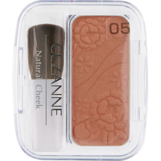

返回列表
产品名称： ナチュラル チークＮ ０５ ベージュ系オレンジ

セザンヌ化粧品 ナチュラル チークＮ ０５ ベージュ系オレンジ ３．６ｇ
メーカー セザンヌ化粧品
JANコード 4939553002956
商品の特徴
高発色で自然に仕上がる、パウダータイプのチークです。
ツヤ感も立体感も思いのまま、なめらかな肌感に仕上がるパールタイプのほほ紅です。
無香料／無鉱物油／ミネラル成分９０％配合
成分・分量
【成分】
タルク、ジメチコン、メチルパラベン、プロピルパラベン、トコフェロール、（＋／－）マイカ、硫酸Ｂａ、メチコン、酸化チタン、酸化鉄、グンジョウ、赤２２６、赤２０２
用法及び用量
【使用方法】
ブラシでほほに塗布してください。